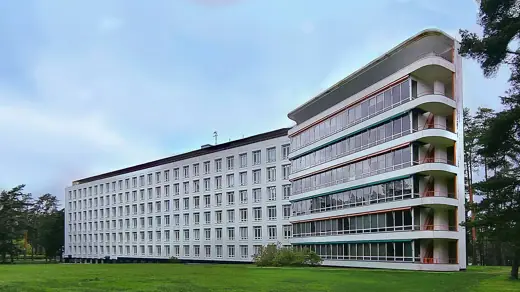
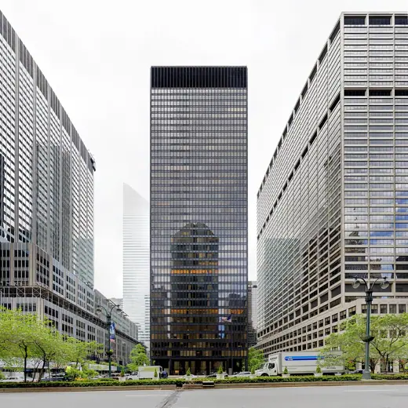
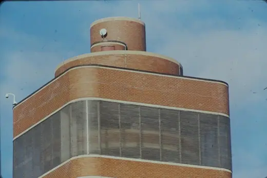
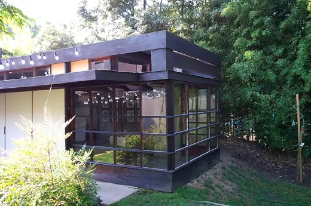
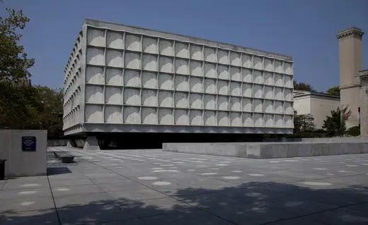

Buildings 934
Sort
 Barcelona Pavilion1929 · Barcelona
Barcelona Pavilion1929 · Barcelona Price Tower1956 · Bartlesville
Price Tower1956 · Bartlesville Melnikov House1929 · Moscow
Melnikov House1929 · Moscow Eames House1949 · Los Angeles
Eames House1949 · Los Angeles Fagus Factory1911 · Alfeld
Fagus Factory1911 · Alfeld National Museum of Western Art1959 · Tokyo
National Museum of Western Art1959 · Tokyo Space Needle1962 · Seattle
Space Needle1962 · Seattle Viipuri Library1935 · Vyborg
Viipuri Library1935 · Vyborg Rietveld Schröder House1924 · Utrecht
Rietveld Schröder House1924 · Utrecht Hiroshima Peace Memorial Museum1955 · Hiroshima
Hiroshima Peace Memorial Museum1955 · Hiroshima S. R. Crown Hall1956 · Chicago
S. R. Crown Hall1956 · Chicago Marin County Civic Center1962 · San Rafael
Marin County Civic Center1962 · San Rafael
Paimio Sanatorium1933 · Paimio Shukhov Tower1922 · Moscow
Shukhov Tower1922 · Moscow 860-880 Lake Shore Drive1951 · Chicago
860-880 Lake Shore Drive1951 · Chicago National Congress of Brazil1960 · Brasilia
National Congress of Brazil1960 · Brasilia Niterói Contemporary Art Museum1996 · Niterói
Niterói Contemporary Art Museum1996 · Niterói Darwin D. Martin House1905 · Buffalo
Darwin D. Martin House1905 · Buffalo Central Library (UNAM)1956 · Mexico City
Central Library (UNAM)1956 · Mexico City Mill Owners' Association Building1954 · Ahmedabad
Mill Owners' Association Building1954 · Ahmedabad Solomon R. Guggenheim Museum1959 · New York
Solomon R. Guggenheim Museum1959 · New York Bauhaus Dessau1926 · Dessau
Bauhaus Dessau1926 · Dessau Farnsworth House1951 · Plano
Farnsworth House1951 · Plano Fernsehturm Berlin1969 · Berlin
Fernsehturm Berlin1969 · Berlin MetLife Building1963 · New York
MetLife Building1963 · New York Villa Mairea1939 · Noormarkku
Villa Mairea1939 · Noormarkku Weissenhof Estate1927 · Stuttgart
Weissenhof Estate1927 · Stuttgart Stuttgart TV Tower1956 · Stuttgart
Stuttgart TV Tower1956 · Stuttgart French Communist Party Headquarters1971 · Paris
French Communist Party Headquarters1971 · Paris MIT Chapel1955 · Cambridge
MIT Chapel1955 · Cambridge
Seagram Building1958 · New York Fallingwater1939 · Mill Run
Fallingwater1939 · Mill Run Gropius House1938 · Lincoln
Gropius House1938 · Lincoln Glass House1949 · New Canaan
Glass House1949 · New Canaan St. Mary's Cathedral1964 · Tokyo
St. Mary's Cathedral1964 · Tokyo
Johnson Wax Headquarters1939 · Racine
Schindler House1922 · West Hollywood Neue Nationalgalerie1968 · Berlin
Neue Nationalgalerie1968 · Berlin
Beinecke Rare Book & Manuscript Library1963 · New Haven Luce Memorial Chapel1963 · Taichung
Luce Memorial Chapel1963 · Taichung Milam Residence1961 · Ponte Vedra Beach
Milam Residence1961 · Ponte Vedra Beach